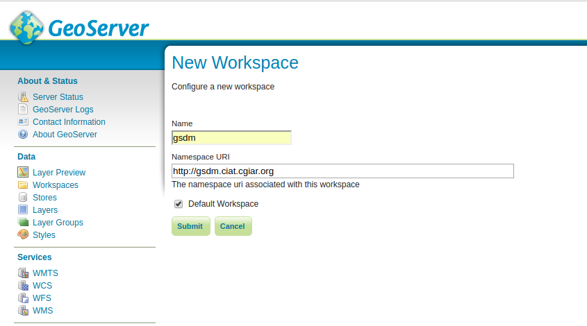

Installation Guide¶
The following is a guide to get GSDM up and running in a Linux operating system. This is meant to be run on a fresh machine with no previously installed packages or GSDM versions.
Recommended Minimum System Requirements¶
For deployment of GSDM on a single server, the following are the bare minimum system requirements:
- 6GB of RAM, including swap space.
- 2.2GHz processor. (Additional processing power may be required for multiple concurrent map renderings and R processing)
- 1 GB software disk usage.
- Additional disk space for any data hosted with GeoServer, database, user uploads and outputs. For spatial data, cached tiles, and files useful for R processing, a decent baseline size for GSDM deployment is 100GB.
- 64-bit hardware recommended.
Software Requirements¶
The current GSDM release has been tested on a server meeting the following requirements:
- Ubuntu 16.04 64 bit server edition.
- GeoServer 2.14
- R version 3.4.4
- Postgresql 9.5
- Postgis 2.2
- Apache2
- libapache2-mod-wsgi
- Git
- Python-django
- Python-psycopg2
Python Packages (requirements.txt)¶
- Django==1.8.19
- Fiona==1.7.13
- GDAL==2.1.2
- gsconfig==1.0.10
- psycopg2==2.7.3.1
R packages¶
- raster
- SurfaceTortoise
- mapsRinteractive
Ubuntu Deployment¶
The steps to deploy GSDM in a Ubuntu 16.04 machine are as follows:
Clone the GSDM git repository:
git clone https://github.com/appliedgeo/gsdm.git
Set up the GSDM data directories:
$ cd /var/www/html/ $ sudo mkdir -p gsdm gsdm/data gsdm/data/samplingout gsdm/data/adaptationout gsdm/uploaded gsdm/uploaded/shapefiles $ sudo chown -R www-data:www-data gsdm/ $ sudo chmod -R 777 gsdm/
Create the GSDM database and enable the spatial extension:
$ createdb gsdm $ psql gsdm # CREATE EXTENSION postgis;
Load data into the GSDM database:
$ psql gsdm -f gsdm_data
Create the GSDM workspace in GeoServer.
Publish GSDM soil background maps to GeoServer as WMS layers.

Set up and enable the Apache2 virtualhost configuration for the GSDM web interface:
$ sudo vim etc/apache2/sites-available/gsdm.conf WSGIPythonPath /home/ubuntu/gsdm/gsdmapp/:/usr/local/lib/python2.7/dist-packages <VirtualHost *:80> ServerName localhost ServerAdmin admin@gsdm.ciat.cgiar.org ErrorLog /var/log/apache2/error.log LogLevel warn CustomLog /var/log/apache2/access.log combined WSGIPassAuthorization On WSGIScriptAlias / /home/ubuntu/gsdm/gsdmapp/gsdmapp/wsgi.py <Directory "/home/ubuntu/gsdm/gsdmapp/gsdmapp/"> <Files wsgi.py> Order deny,allow Require all granted </Files> </Directory> <Directory /home/ubuntu/gsdm/gsdmapp/gsdmapp/static/> Options Indexes FollowSymLinks AllowOverride None Require all granted IndexOptions FancyIndexing </Directory> <Directory /home/ubuntu/gsdm/docs/_build/html/> Options Indexes FollowSymLinks AllowOverride None Require all granted IndexOptions FancyIndexing </Directory> <Directory "/var/www/html/gsdm/uploaded/"> Options Indexes FollowSymLinks AllowOverride None Require all granted IndexOptions FancyIndexing </Directory> <Directory "/var/www/html/gsdm/data/"> Options Indexes FollowSymLinks AllowOverride None Require all granted IndexOptions FancyIndexing </Directory> ScriptAlias /cgi-bin/ /usr/lib/cgi-bin/ <Directory "/usr/lib/cgi-bin"> AllowOverride None Options +ExecCGI -MultiViews +SymLinksIfOwnerMatch Order allow,deny Allow from all </Directory> Alias /static/ /home/ubuntu/gsdm/gsdmapp/gsdmapp/static/ Alias /uploaded/ /var/www/html/gsdm/uploaded/ Alias /outputs/ /var/www/html/gsdm/data/ Alias /docs/ /home/ubuntu/gsdm/docs/_build/html/ </VirtualHost> $ sudo a2ensite gsdm.confEnable the www-data user to run Rscript as local user by adding the following line to /etc/sudoers file:
www-data ALL=(ubuntu) NOPASSWD: /usr/bin/Rscript
Access GSDM web interface from your web browser, using the server address from step 7 above. The GSDM home page should be displayed.